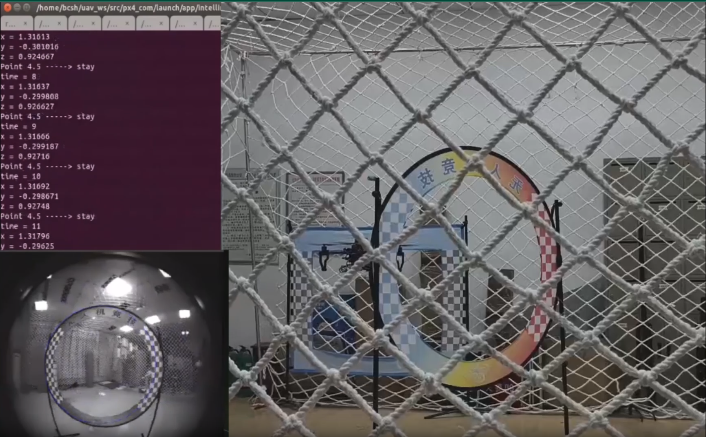

智能赛 · 第一次参赛
无人机比赛 / 省级三等奖
第一次把程序带到赛场
智能赛是我参加的第一个比赛。这次比赛中，我们完成了全部任务，拿到了满分；但飞行策略偏保守、速度较慢，最终获得省级三等奖，未能晋级。
- 参赛阶段
- 第一次参赛
- 比赛结果
- 任务满分 · 省级三等奖
现场画面

完成任务之后，还需要速度
当时更关注稳定完成任务，算法和飞行策略都偏保守，速度没有跟上。满分说明任务完成了，但用时仍然限制了最终成绩。
这次经历让我开始认真看待稳定性与速度之间的取舍。之后参加RoboCup 自主飞行竞速时，我进一步承担了感知、飞行任务与控制程序的核心开发工作。